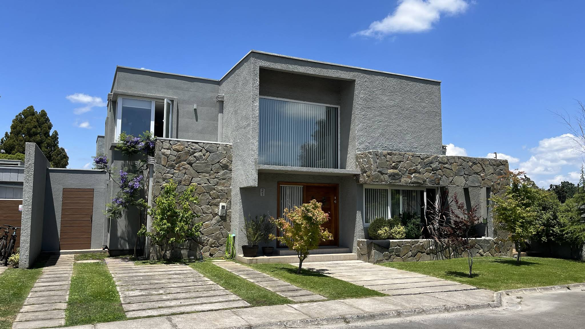
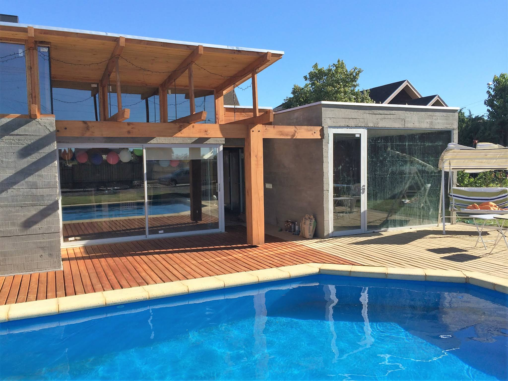
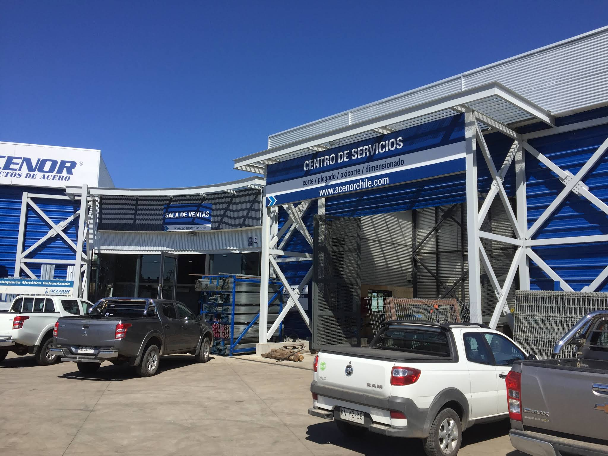
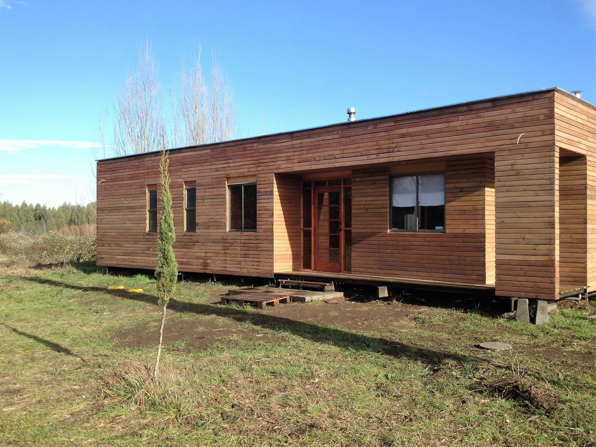
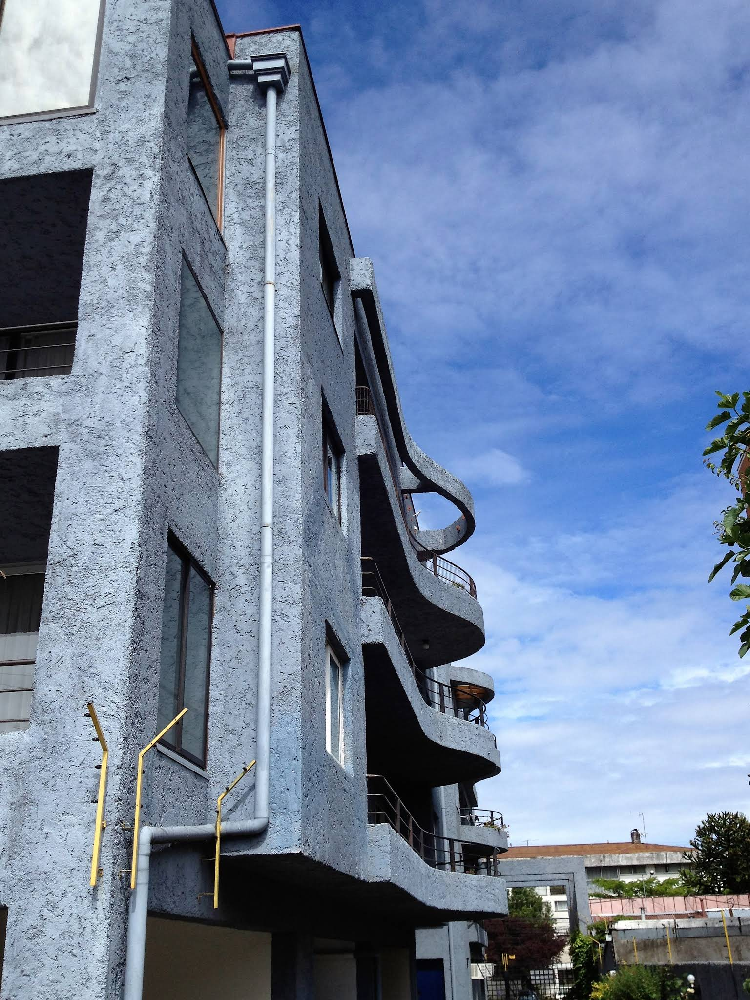
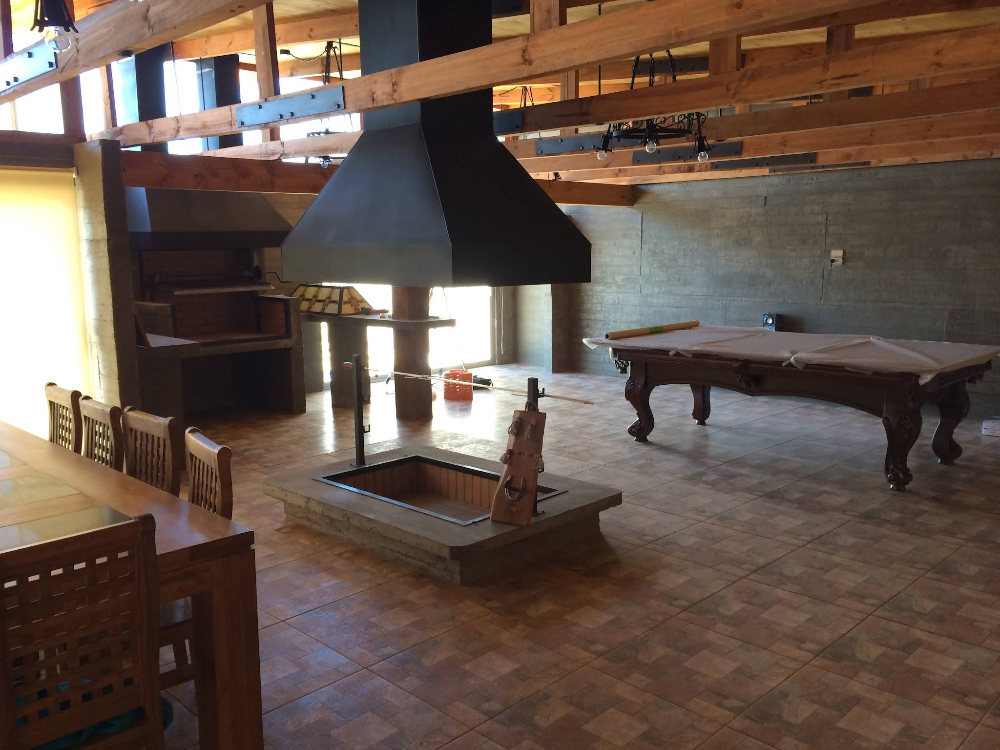
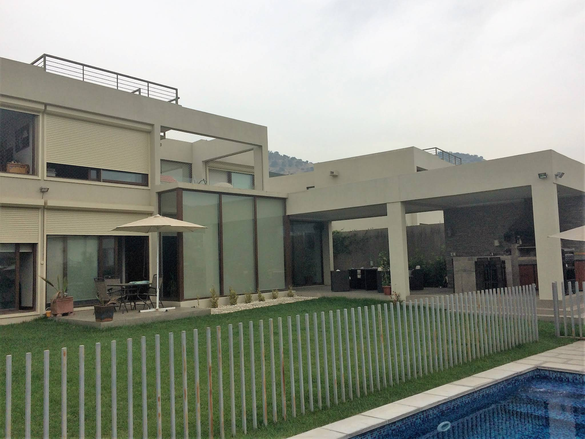
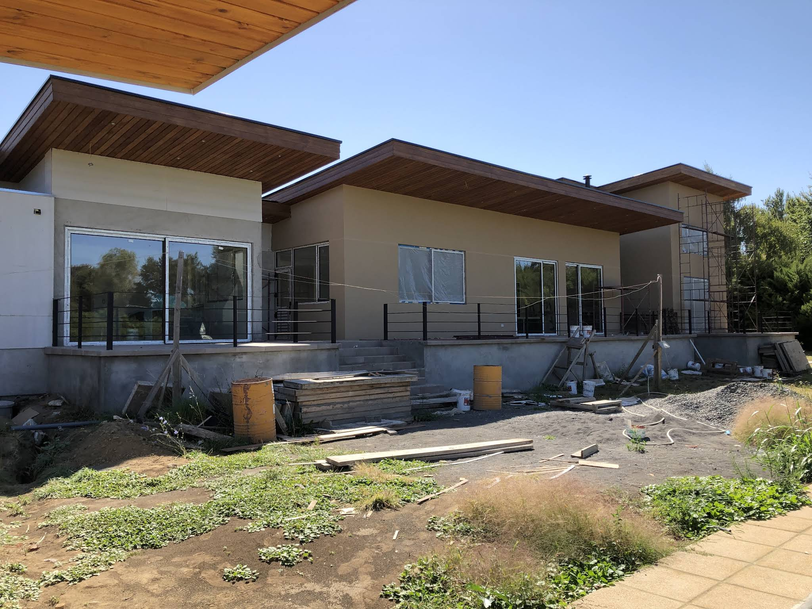
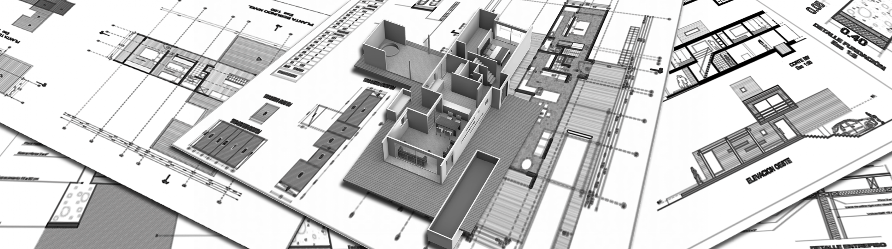
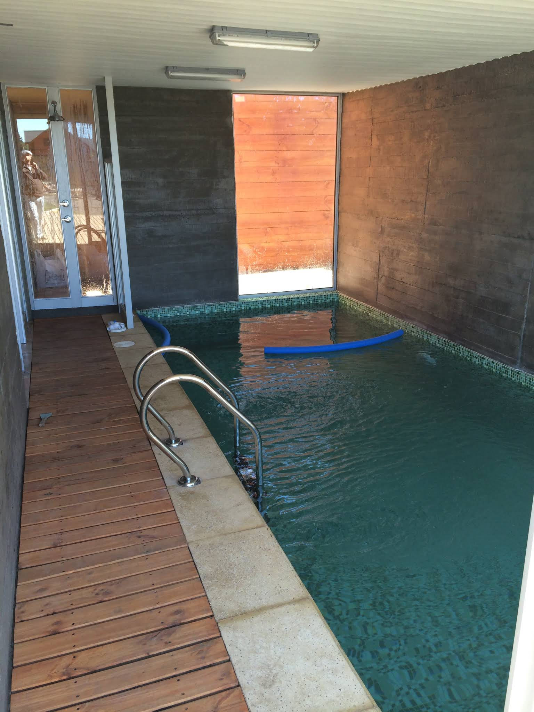

Arquitectura - edificación - urbanización
Zerega Arquitectos Ltda
Estudio dirigido por el arquitecto Mario Zerega, con más de 25 años de experiencia en proyectos de viviendas, edificios, obras industriales y desarrollo urbano en la zona central y sur de Chile.
El estudio
Arquitectura con oficio, gestión y mirada territorial.
Zerega Arquitectos Ltda desarrolla proyectos de edificación y urbanización, integrando diseño, coordinación técnica y experiencia en obras de distintas escalas. La oficina combina criterio arquitectónico, conocimiento normativo y cercanía con el mandante.
Su trabajo se proyecta desde Los Ángeles hacia la zona central y sur de Chile, con atención en Santiago, Concepción y Los Ángeles.
Servicios
Soluciones para proyectos habitacionales, comerciales e industriales.
Edificación
Desarrollo de arquitectura para viviendas, edificios y equipamientos, desde el concepto hasta el expediente técnico.
Urbanizacion
Planificación de conjuntos, loteos y obras asociadas, con una lectura práctica del territorio y sus etapas de gestión.
Proyectos industriales
Arquitectura funcional para servicios, bodegas, instalaciones productivas y espacios de apoyo operacional.
Coordinacion y permisos
Acompañamiento técnico para ordenar requerimientos, compatibilizar especialidades y preparar documentación municipal.
Material fotografico real
Proyectos y lineas de trabajo.

Vivienda y recreacion
Club house y espacios exteriores
Uso de madera, transparencias y recorridos exteriores para crear una arquitectura social, luminosa y conectada con el paisaje.

Equipamiento
Servicios y comercio
Volumenes claros, accesos legibles y estructuras visibles para proyectos de uso publico o productivo.

Habitacional
Vivienda en zona sur
Materialidad calida, escala domestica y criterios constructivos adecuados al clima del centro-sur.
Galeria
Registro visual de obras y procesos.






Cobertura
Oficinas en Santiago, Concepción y Los Ángeles.
La oficina principal registrada en Google Maps se ubica en Los Ángeles, Bío Bío. Desde ahí, el estudio atiende proyectos en la zona central y sur del país, con presencia indicada en Santiago y Concepción.
Santiago
Concepción
Los Ángeles
Ubicación
Oficina Los Ángeles
José Manso de Velasco 221, Oficina 1309Edificio Manso de Velasco City Center
Los Ángeles, Región del Bío Bío
Conversemos